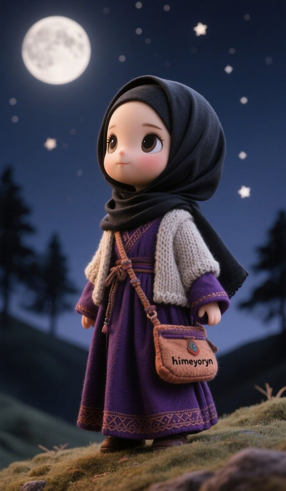
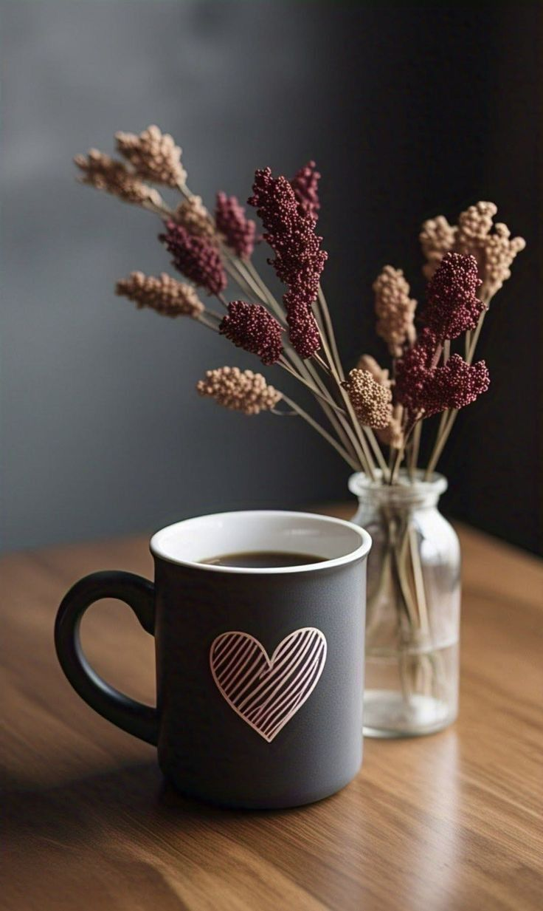
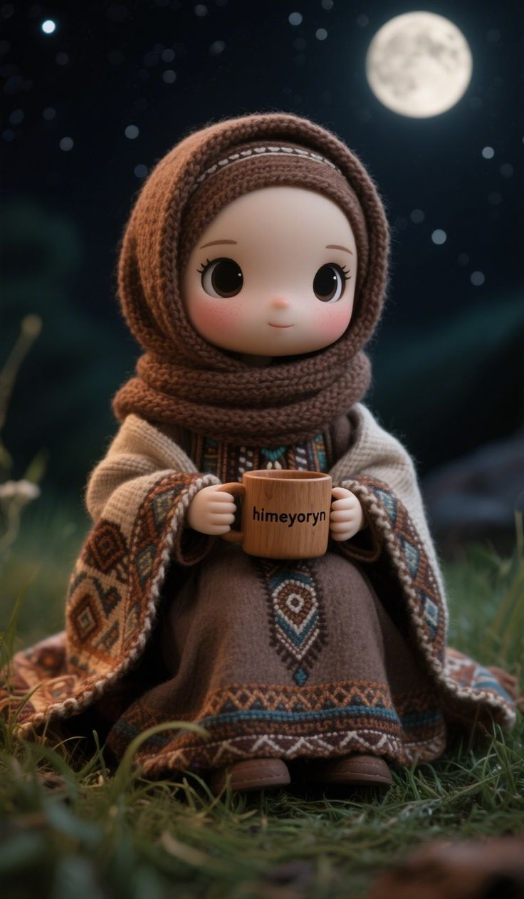
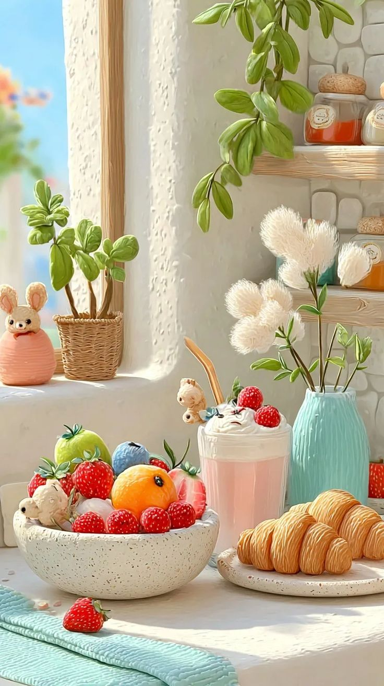
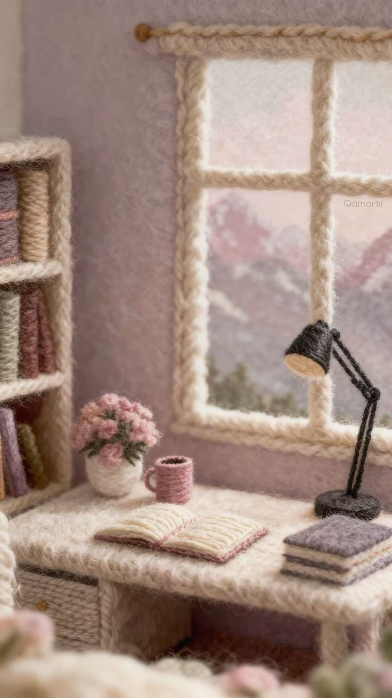

Iman dan Ujiannya
Iman itu bukan cuma soal ucapan, tapi soal seberapa kuat kita bertahan, ketika dunia mulai menggoyahkan.
Read moreDi sini, tempat kita mengubah hening menjadi doa dan setiap ujian menjadi cerita, demi menemukan makna serta ketenangan dalam setiap langkah yang Dia ridhai.
Iman itu bukan cuma soal ucapan, tapi soal seberapa kuat kita bertahan, ketika dunia mulai menggoyahkan.
Read more
"Bahwa apa yang luput dariku, tidak pernah tertulis untukku. Dan apa yang tertulis untukku, tak akan pernah luput dariku.
Read more
Menjadi perhiasan yang membawa kebaikan dan kedamaian, atau menjadi fitnah yang menimbulkan kekacauan dan penyesalan.
Read more


Tawakal sejati bukanlah meninggalkan usaha, melainkan menambatkan hasil akhir pada kehendak-Nya.
Read more
Ada penyakit hati yang halus namun mematikan bernama hasad (dengki). Ia bekerja seperti api yang memakan kayu bakar—perlahan, namun menghabiskan seluruh kebaikan yang kita miliki.
Read more
Jangan bandingkan musim panenmu dengan musim tanam orang lain. Bandingkanlah dirimu hari ini dengan dirimu yang kemarin. Selama ada pertumbuhan, meski hanya seujung kuku, engkau sedang menang.
Read more
Ketika kita berhenti bertanya "Mengapa ini terjadi padaku?" dan mulai bertanya "Apa yang ingin Engkau ajarkan padaku?", maka beban itu akan terasa jauh lebih ringan.
Read more
Sebab pada akhirnya, sebaik-baiknya tempat bersandar bukanlah pada rencana-rencana hebat yang kita susun, melainkan pada kehendak-Nya yang tak pernah keliru mencintai hamba-Nya.
Read more